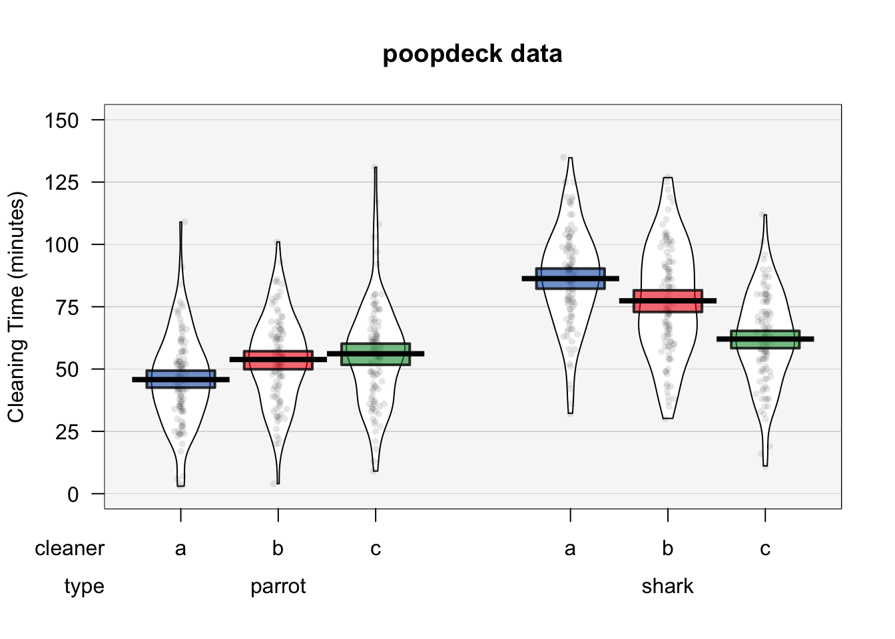
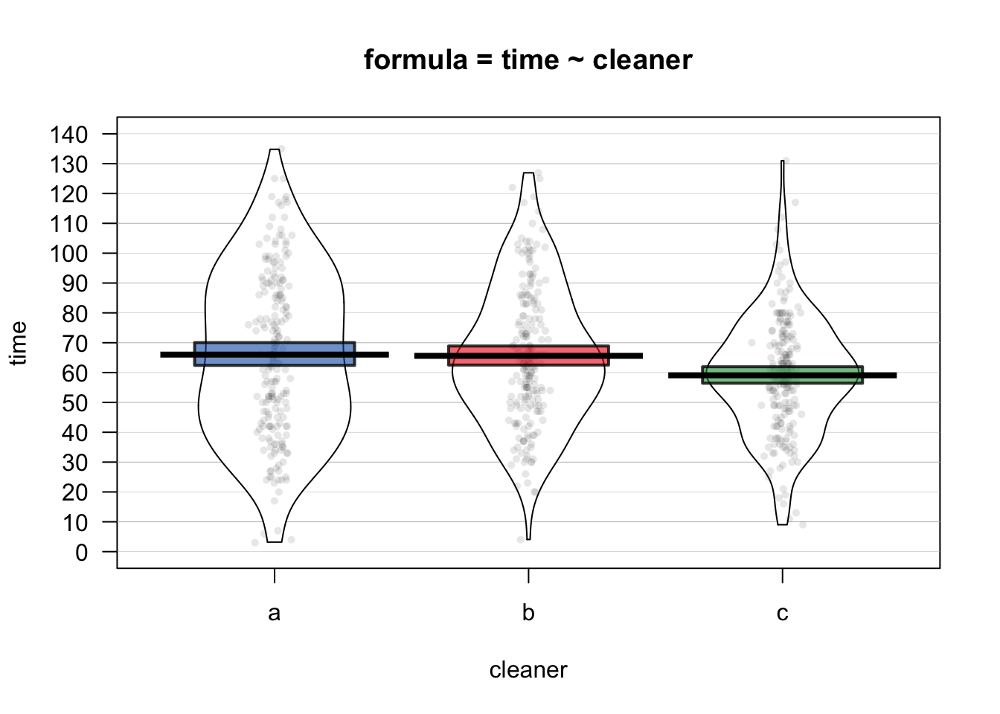

Chapter 14 ANOVA

Figure 14.1: Menage a trois wine – the perfect pairing for a 3-way ANOVA
In the last chapter we covered 1 and two sample hypothesis tests. In these tests, you are either comparing 1 group to a hypothesized value, or comparing the relationship between two groups (either their means or their correlation). In this chapter, we’ll cover how to analyse more complex experimental designs with ANOVAs.
When do you conduct an ANOVA? You conduct an ANOVA when you are testing the effect of one or more nominal (aka factor) independent variable(s) on a numerical dependent variable. A nominal (factor) variable is one that contains a finite number of categories with no inherent order. Gender, profession, experimental conditions, and Justin Bieber albums are good examples of factors (not necessarily of good music). If you only include one independent variable, this is called a One-way ANOVA. If you include two independent variables, this is called a Two-way ANOVA. If you include three independent variables it is called a Menage a trois `NOVA.
Ok maybe it’s not yet, but we repeat it enough it will be and we can change the world.
For example, let’s say you want to test how well each of three different cleaning fluids are at getting poop off of your poop deck.To test this, you could do the following: over the course of 300 cleaning days, you clean different areas of the deck with the three different cleaners. You then record how long it takes for each cleaner to clean its portion of the deck. At the same time, you could also measure how well the cleaner is cleaning two different types of poop that typically show up on your deck: shark and parrot. Here, your independent variables cleaner and type are factors, and your dependent variable time is numeric.
Thankfully, this experiment has already been conducted. The data are recorded in a dataframe called poopdeck in the yarrr package. Here’s how the first few rows of the data look:
head(poopdeck)
## day cleaner type time int.fit me.fit
## 1 1 a parrot 47 46 54
## 2 1 b parrot 55 54 54
## 3 1 c parrot 64 56 47
## 4 1 a shark 101 86 78
## 5 1 b shark 76 77 77
## 6 1 c shark 63 62 71We can visualize the poopdeck data using (of course) a pirate plot:
pirateplot(formula = time ~ cleaner + type,
data = poopdeck,
ylim = c(0, 150),
xlab = "Cleaner",
ylab = "Cleaning Time (minutes)",
main = "poopdeck data",
back.col = gray(.97),
cap.beans = TRUE,
theme = 2)
Given this data, we can use ANOVAs to answer four separate questions:
| Question | Analysis | Formula |
|---|---|---|
| Is there a difference between the different cleaners on cleaning time (ignoring poop type)? | One way ANOVA | time ~ cleaner |
| Is there a difference between the different poop types on cleaning time (ignoring which cleaner is used) | One-way ANOVA | time ~ type |
| Is there a unique effect of the cleaner or poop types on cleaning time? | Two-way ANOVA | time ~ cleaner + type |
| Does the effect of cleaner depend on the poop type? | Two-way ANOVA with interaction term |
time ~ cleaner * type |
14.1 Full-factorial between-subjects ANOVA
There are many types of ANOVAs that depend on the type of data you are analyzing. In fact, there are so many types of ANOVAs that there are entire books explaining differences between one type and another. For this book, we’ll cover just one type of ANOVAs called full-factorial, between-subjects ANOVAs. These are the simplest types of ANOVAs which are used to analyze a standard experimental design. In a full-factorial, between-subjects ANOVA, participants (aka, source of data) are randomly assigned to a unique combination of factors – where a combination of factors means a specific experimental condition. For example, consider a psychology study comparing the effects of caffeine on cognitive performance. The study could have two independent variables: drink type (soda vs. coffee vs. energy drink), and drink dose (.25l, .5l, 1l). In a full-factorial design, each participant in the study would be randomly assigned to one drink type and one drink dose condition. In this design, there would be 3 x 3 = 9 conditions.
For the rest of this chapter, I will refer to full-factorial between-subjects ANOVAs as `standard’ ANOVAs
14.1.1 What does ANOVA stand for?
ANOVA stands for “Analysis of variance.” At first glance, this sounds like a strange name to give to a test that you use to find differences in means, not differences in variances. However, ANOVA actually uses variances to determine whether or not there are ‘real’ differences in the means of groups. Specifically, it looks at how variable data are within groups and compares that to the variability of data between groups. If the between-group variance is large compared to the within group variance, the ANOVA will conclude that the groups do differ in their means. If the between-group variance is small compared to the within group variance, the ANOVA will conclude that the groups are all the same. See Figure~ for a visual depiction of an ANOVA.
![How ANOVAs work. ANOVA compares the variability between groups (i.e.; the differences in the group means) to the variability within groups (i.e.; how much individuals generally differ from each other). If the variability between groups is small compared to the variability between groups, ANOVA will return a non-significant result -- suggesting that the groups are not really different. If the variability between groups is large compared to the variability within groups, ANOVA will return a significant result -- indicating that the groups are really different.](YaRrr_files/figure-html/unnamed-chunk-374-1.png)
Figure 14.2: How ANOVAs work. ANOVA compares the variability between groups (i.e.; the differences in the group means) to the variability within groups (i.e.; how much individuals generally differ from each other). If the variability between groups is small compared to the variability between groups, ANOVA will return a non-significant result – suggesting that the groups are not really different. If the variability between groups is large compared to the variability within groups, ANOVA will return a significant result – indicating that the groups are really different.
14.2 4 Steps to conduct an ANOVA
Here are the 4 steps you should follow to conduct a standard ANOVA in R:
- Create an ANOVA object using the
aov()function. In theaov()function, specify the independent and dependent variable(s) with a formula with the formaty ~ x1 + x2where y is the dependent variable, and x1, x2 … are one (more more) factor independent variables.
# Step 1: Create an aov object
mod.aov <- aov(formula = y ~ x1 + x2 + ...,
data = data)- Create a summary ANOVA table by applying the
summary()function to the ANOVA object you created in Step 1.
# Step 2: Look at a summary of the aov object
summary(mod.aov)- If necessary, calculate post-hoc tests by applying a post-hoc testing function like
TukeyHSD()to the ANOVA object you created in Step 1.
# Step 3: Calculate post-hoc tests
TukeyHSD(mod.aov)- If necessary, interpret the nature of the group differences by creating a linear regression object using
lm()using the same arguments you used in theaov()function in Step 1.
# Step 4: Look at coefficients
mod.lm <- lm(formula = y ~ x1 + x2 + ...,
data = data)
summary(mod.lm)14.3 Ex: One-way ANOVA
Let’s do an example by running both a one-way ANOVA on the poopdeck data. We’ll set cleaning time time as the dependent variable and the cleaner type cleaner as the independent variable. We can represent the data as a pirateplot:
yarrr::pirateplot(time ~ cleaner,
data = poopdeck,
theme = 2,
cap.beans = TRUE,
main = "formula = time ~ cleaner")
From the plot, it looks like cleaners a and b are the same, and cleaner c is a bit faster. To test this, we’ll create an ANOVA object with aov. Because time is the dependent variable and cleaner is the independent variable, we’ll set the formula to formula = time ~ cleaner
# Step 1: aov object with time as DV and cleaner as IV
cleaner.aov <- aov(formula = time ~ cleaner,
data = poopdeck)Now, to see a full ANOVA summary table of the ANOVA object, apply the summary() to the ANOVA object from Step 1.
# Step 2: Look at the summary of the anova object
summary(cleaner.aov)
## Df Sum Sq Mean Sq F value Pr(>F)
## cleaner 2 6057 3028 5.29 0.0053 **
## Residuals 597 341511 572
## ---
## Signif. codes: 0 '***' 0.001 '**' 0.01 '*' 0.05 '.' 0.1 ' ' 1The main result from our table is that we have a significant effect of cleaner on cleaning time (F(2, 597) = 5.29, p = 0.005. However, the ANOVA table does not tell us which levels of the independent variable differ. In other words, we don’t know which cleaner is better than which. To answer this, we need to conduct a post-hoc test.
If you’ve found a significant effect of a factor, you can then do post-hoc tests to test the difference between each all pairs of levels of the independent variable. There are many types of pairwise comparisons that make different assumptions. To learn more about the logic behind different post-hoc tests, check out the Wikipedia page here: https://en.wikipedia.org/wiki/Post_hoc_analysis. One of the most common post-hoc tests for standard ANOVAs is the Tukey Honestly Significant Difference (HSD) test. To see additional information about the Tukey HSD test, check out the Wikipedia page here: https://en.wikipedia.org/wiki/Tukey’s_range_test To do an HSD test, apply the TukeyHSD() function to your ANOVA object as follows:
# Step 3: Conduct post-hoc tests
TukeyHSD(cleaner.aov)
## Tukey multiple comparisons of means
## 95% family-wise confidence level
##
## Fit: aov(formula = time ~ cleaner, data = poopdeck)
##
## $cleaner
## diff lwr upr p adj
## b-a -0.42 -6 5.2 0.98
## c-a -6.94 -13 -1.3 0.01
## c-b -6.52 -12 -0.9 0.02This table shows us pair-wise differences between each group pair. The diff column shows us the mean differences between groups (which thankfully are identical to what we found in the summary of the regression object before), a confidence interval for the difference, and a p-value testing the null hypothesis that the group differences are not different.
I almost always find it helpful to combine an ANOVA summary table with a regression summary table. Because ANOVA is just a special case of regression (where all the independent variables are factors), you’ll get the same results with a regression object as you will with an ANOVA object. However, the format of the results are different and frequently easier to interpret.
To create a regression object, use the lm() function. Your inputs to this function will be identical to your inputs to the aov() function
# Step 4: Create a regression object
cleaner.lm <- lm(formula = time ~ cleaner,
data = poopdeck)
# Show summary
summary(cleaner.lm)
##
## Call:
## lm(formula = time ~ cleaner, data = poopdeck)
##
## Residuals:
## Min 1Q Median 3Q Max
## -63.02 -16.60 -1.05 16.92 71.92
##
## Coefficients:
## Estimate Std. Error t value Pr(>|t|)
## (Intercept) 66.02 1.69 39.04 <2e-16 ***
## cleanerb -0.42 2.39 -0.18 0.8607
## cleanerc -6.94 2.39 -2.90 0.0038 **
## ---
## Signif. codes: 0 '***' 0.001 '**' 0.01 '*' 0.05 '.' 0.1 ' ' 1
##
## Residual standard error: 24 on 597 degrees of freedom
## Multiple R-squared: 0.0174, Adjusted R-squared: 0.0141
## F-statistic: 5.29 on 2 and 597 DF, p-value: 0.00526As you can see, the regression table does not give us tests for each variable like the ANOVA table does. Instead, it tells us how different each level of an independent variable is from a default value. You can tell which value of an independent variable is the default variable just by seeing which value is missing from the table. In this case, I don’t see a coefficient for cleaner a, so that must be the default value.
The intercept in the table tells us the mean of the default value. In this case, the mean time of cleaner a was 66.02. The coefficients for the other levels tell us that cleaner b is, on average 0.42 minutes faster than cleaner a, and cleaner c is on average 6.94 minutes faster than cleaner a. Not surprisingly, these are the same differences we saw in the Tukey HSD test!
14.4 Ex: Two-way ANOVA
To conduct a two-way ANOVA or a Menage a trois NOVA, just include additional independent variables in the regression model formula with the + sign. That’s it. All the steps are the same. Let’s conduct a two-way ANOVA with both cleaner and type as independent variables. To do this, we’ll set formula = time ~ cleaner + type.
# Step 1: Create ANOVA object with aov()
cleaner.type.aov <- aov(formula = time ~ cleaner + type,
data = poopdeck)# Step 2: Get ANOVA table with summary()
summary(cleaner.type.aov)
## Df Sum Sq Mean Sq F value Pr(>F)
## cleaner 2 6057 3028 6.94 0.001 **
## type 1 81620 81620 187.18 <2e-16 ***
## Residuals 596 259891 436
## ---
## Signif. codes: 0 '***' 0.001 '**' 0.01 '*' 0.05 '.' 0.1 ' ' 1It looks like we found significant effects of both independent variables.
# Step 3: Conduct post-hoc tests
TukeyHSD(cleaner.type.aov)
## Tukey multiple comparisons of means
## 95% family-wise confidence level
##
## Fit: aov(formula = time ~ cleaner + type, data = poopdeck)
##
## $cleaner
## diff lwr upr p adj
## b-a -0.42 -5.3 4.5 0.98
## c-a -6.94 -11.8 -2.0 0.00
## c-b -6.52 -11.4 -1.6 0.01
##
## $type
## diff lwr upr p adj
## shark-parrot 23 20 27 0The only non-significant group difference we found is between cleaner b and cleaner a. All other comparisons were significant.
# Step 4: Look at regression coefficients
cleaner.type.lm <- lm(formula = time ~ cleaner + type,
data = poopdeck)
summary(cleaner.type.lm)
##
## Call:
## lm(formula = time ~ cleaner + type, data = poopdeck)
##
## Residuals:
## Min 1Q Median 3Q Max
## -59.74 -13.79 -0.68 13.58 83.58
##
## Coefficients:
## Estimate Std. Error t value Pr(>|t|)
## (Intercept) 54.36 1.71 31.88 < 2e-16 ***
## cleanerb -0.42 2.09 -0.20 0.84067
## cleanerc -6.94 2.09 -3.32 0.00094 ***
## typeshark 23.33 1.71 13.68 < 2e-16 ***
## ---
## Signif. codes: 0 '***' 0.001 '**' 0.01 '*' 0.05 '.' 0.1 ' ' 1
##
## Residual standard error: 21 on 596 degrees of freedom
## Multiple R-squared: 0.252, Adjusted R-squared: 0.248
## F-statistic: 67 on 3 and 596 DF, p-value: <2e-16Now we need to interpret the results in respect to two default values (here, cleaner = a and type = parrot). The intercept means that the average time for cleaner a on parrot poop was 54.36 minutes. Additionally, the average time to clean shark poop was 23.33 minutes slower than when cleaning parrot poop.
14.4.1 ANOVA with interactions
Interactions between variables test whether or not the effect of one variable depends on another variable. For example, we could use an interaction to answer the question: Does the effect of cleaners depend on the type of poop they are used to clean? To include interaction terms in an ANOVA, just use an asterix (*) instead of the plus (+) between the terms in your formula. Note that when you include an interaction term in a regression object, R will automatically include the main effects as well/
Let’s repeat our previous ANOVA with two independent variables, but now we’ll include the interaction between cleaner and type. To do this, we’ll set the formula to time ~ cleaner * type.
# Step 1: Create ANOVA object with interactions
cleaner.type.int.aov <- aov(formula = time ~ cleaner * type,
data = poopdeck)
# Step 2: Look at summary table
summary(cleaner.type.int.aov)
## Df Sum Sq Mean Sq F value Pr(>F)
## cleaner 2 6057 3028 7.82 0.00044 ***
## type 1 81620 81620 210.86 < 2e-16 ***
## cleaner:type 2 29968 14984 38.71 < 2e-16 ***
## Residuals 594 229923 387
## ---
## Signif. codes: 0 '***' 0.001 '**' 0.01 '*' 0.05 '.' 0.1 ' ' 1Looks like we did indeed find a significant interaction between cleaner and type. In other words, the effectiveness of a cleaner depends on the type of poop it’s being applied to. This makes sense given our plot of the data at the beginning of the chapter.
To understand the nature of the difference, we’ll look at the regression coefficients from a regression object:
# Step 4: Calculate regression coefficients
cleaner.type.int.lm <- lm(formula = time ~ cleaner * type,
data = poopdeck)
summary(cleaner.type.int.lm)
##
## Call:
## lm(formula = time ~ cleaner * type, data = poopdeck)
##
## Residuals:
## Min 1Q Median 3Q Max
## -54.28 -12.83 -0.08 12.29 74.87
##
## Coefficients:
## Estimate Std. Error t value Pr(>|t|)
## (Intercept) 45.76 1.97 23.26 < 2e-16 ***
## cleanerb 8.06 2.78 2.90 0.00391 **
## cleanerc 10.37 2.78 3.73 0.00021 ***
## typeshark 40.52 2.78 14.56 < 2e-16 ***
## cleanerb:typeshark -16.96 3.93 -4.31 1.9e-05 ***
## cleanerc:typeshark -34.62 3.93 -8.80 < 2e-16 ***
## ---
## Signif. codes: 0 '***' 0.001 '**' 0.01 '*' 0.05 '.' 0.1 ' ' 1
##
## Residual standard error: 20 on 594 degrees of freedom
## Multiple R-squared: 0.338, Adjusted R-squared: 0.333
## F-statistic: 60.8 on 5 and 594 DF, p-value: <2e-16Again, to interpret this table, we first need to know what the default values are. We can tell this from the coefficients that are ‘missing’ from the table. Because I don’t see terms for cleanera or typeparrot, this means that cleaner = "a" and type = "parrot" are the defaults. Again, we can interpret the coefficients as differences between a level and the default. It looks like for parrot poop, cleaners b and c both take more time than cleaner a (the default). Additionally, shark poop tends to take much longer than parrot poop to clean (the estimate for typeshark is positive).
The interaction terms tell us how the effect of cleaners changes when one is cleaning shark poop. The negative estimate (-16.96) for cleanerb:typeshark means that cleaner b is, on average 16.96 minutes faster when cleaning shark poop compared to parrot poop. Because the previous estimate for cleaner b (for parrot poop) was just 8.06, this suggests that cleaner b is slower than cleaner a for parrot poop, but faster than cleaner a for shark poop. Same thing for cleaner c which simply has stronger effects in both directions.
14.5 Type I, Type II, and Type III ANOVAs
It turns out that there is not just one way to calculate ANOVAs. In fact, there are three different types - called, Type 1, 2, and 3 (or Type I, II and III). These types differ in how they calculate variability (specifically the sums of of squares). If your data is relatively balanced, meaning that there are relatively equal numbers of observations in each group, then all three types will give you the same answer. However, if your data are unbalanced, meaning that some groups of data have many more observations than others, then you need to use Type II (2) or Type III (3).
The standard aov() function in base-R uses Type I sums of squares. Therefore, it is only appropriate when your data are balanced. If your data are unbalanced, you should conduct an ANOVA with Type II or Type III sums of squares. To do this, you can use the Anova() function in the car package. The Anova() function has an argument called type that allows you to specify the type of ANOVA you want to calculate.
In the next code chunk, I’ll calculate 3 separate ANOVAs from the poopdeck data using the three different types. First, I’ll create a regression object with lm(). As you’ll see, the Anova() function requires you to enter a regression object as the main argument, and not a formula and dataset. That is, you need to first create a regression object from the data with lm() (or glm()), and then enter that object into the Anova() function. You can also do the same thing with the standard aov() function`.
# Step 1: Calculate regression object with lm()
time.lm <- lm(formula = time ~ type + cleaner,
data = poopdeck)Now that I’ve created the regression object time.lm, I can calculate the three different types of ANOVAs by entering the object as the main argument to either aov() for a Type I ANOVA, or Anova() in the car package for a Type II or Type III ANOVA:
# Type I ANOVA - aov()
time.I.aov <- aov(time.lm)
# Type II ANOVA - Anova(type = 2)
time.II.aov <- car::Anova(time.lm, type = 2)
# Type III ANOVA - Anova(type = 3)
time.III.aov <- car::Anova(time.lm, type = 3)As it happens, the data in the poopdeck dataframe are perfectly balanced (so we’ll get exactly the same result for each ANOVA type. However, if they were not balanced, then we should not use the Type I ANOVA calculated with the aov() function.
To see if your data are balanced, you can use the function:
# Are observations in the poopdeck data balanced?
with(poopdeck,
table(cleaner, type))
## type
## cleaner parrot shark
## a 100 100
## b 100 100
## c 100 100As you can see, in the poopdeck data, the observations are perfectly balanced, so it doesn’t matter which type of ANOVA we use to analyse the data.
For more detail on the different types, check out https://mcfromnz.wordpress.com/2011/03/02/anova-type-iiiiii-ss-explained/.
14.6 Getting additional information from ANOVA objects
You can get a lot of interesting information from ANOVA objects. To see everything that’s stored in one, run the command on an ANOVA object. For example, here’s what’s in our last ANOVA object:
# Show me what's in my aov object
names(cleaner.type.int.aov)
## [1] "coefficients" "residuals" "effects" "rank"
## [5] "fitted.values" "assign" "qr" "df.residual"
## [9] "contrasts" "xlevels" "call" "terms"
## [13] "model"For example, the "fitted.values" contains the model fits for the dependent variable (time) for every observation in our dataset. We can add these fits back to the dataset with the $ operator and assignment. For example, let’s get the model fitted values from both the interaction model (cleaner.type.aov) and the non-interaction model (cleaner.type.int.aov) and assign them to new columns in the dataframe:
# Add the fits for the interaction model to the dataframe as int.fit
poopdeck$int.fit <- cleaner.type.int.aov$fitted.values
# Add the fits for the main effects model to the dataframe as me.fit
poopdeck$me.fit <- cleaner.type.aov$fitted.valuesNow let’s look at the first few rows in the table to see the fits for the first few observations.
head(poopdeck)
## day cleaner type time int.fit me.fit
## 1 1 a parrot 47 46 54
## 2 1 b parrot 55 54 54
## 3 1 c parrot 64 56 47
## 4 1 a shark 101 86 78
## 5 1 b shark 76 77 77
## 6 1 c shark 63 62 71You can use these fits to see how well (or poorly) the model(s) were able to fit the data. For example, we can calculate how far each model’s fits were from the true data as follows:
# How far were the interaction model fits from the data on average?
mean(abs(poopdeck$int.fit - poopdeck$time))
## [1] 15
# How far were the main effect model fits from the data on average?
mean(abs(poopdeck$me.fit - poopdeck$time))
## [1] 17As you can see, the interaction model was off from the data by 15.35 minutes on average, while the main effects model was off from the data by 16.54 on average. This is not surprising as the interaction model is more complex than the main effects only model. However, just because the interaction model is better at fitting the data doesn’t necessarily mean that the interaction is either meaningful or reliable.
14.7 Repeated measures ANOVA using the lme4 package
If you are conducting an analyses where you’re repeating measurements over one or more third variables, like giving the same participant different tests, you should do a mixed-effects regression analysis. To do this, you should use the lmer function in the lme4 package. For example, in our poopdeck data, we have repeated measurements for days. That is, on each day, we had 6 measurements. Now, it’s possible that the overall cleaning times differed depending on the day. We can account for this by including random intercepts for day by adding the (1|day) term to the formula specification. For more tips on mixed-effects analyses, check out this great tutorial by Bodo Winter at http://www.bodowinter.com/tutorial/bw_LME_tutorial2.pdf.
# install.packages(lme4) # If you don't have the package already
library(lme4)
# Calculate a mixed-effects regression on time with
# Two fixed factors (cleaner and type)
# And one repeated measure (day)
my.mod <- lmer(formula = time ~ cleaner + type + (1|day),
data = poopdeck)14.8 Test your R might!
For the following questions, use the pirates dataframe in the yarrr package
Is there a significant relationship between a pirate’s favorite pixar movie and the number of tattoos (s)he has? Conduct an appropriate ANOVA with
fav.pixaras the independent variable, andtattoosas the dependent variable. If there is a significant relationship, conduct a post-hoc test to determine which levels of the independent variable(s) differ.Is there a significant relationship between a pirate’s favorite pirate and how many tattoos (s)he has? Conduct an appropriate ANOVA with
favorite.pirateas the independent variable, andtattoosas the dependent variable. If there is a significant relationship, conduct a post-hoc test to determine which levels of the independent variable(s) differ.Now, repeat your analysis from the previous two questions, but include both independent variables
fav.pixarandfavorite.piratein the ANOVA. Do your conclusions differ when you include both variables?Finally, test if there is an interaction between
fav.pixarandfavorite.pirateon number of tattoos.